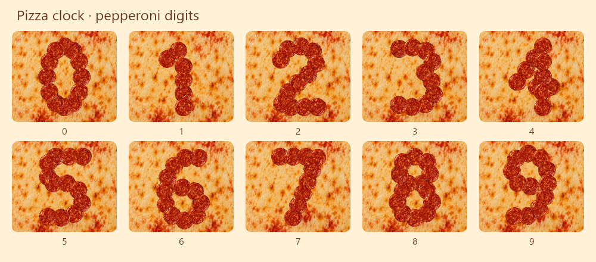
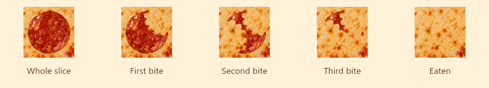

Pizza clock
Pepperoni slices form each digit on a real pizza background. Only changed digits get eaten, bite by bite, before fresh slices land in the new shape.
Loading artwork…
480 × 320 display · four bites per slice · 3.6-second eat-and-rebuild sequence


Approved design simulation. The firmware version uses these digit shapes, artwork, and animation timings.